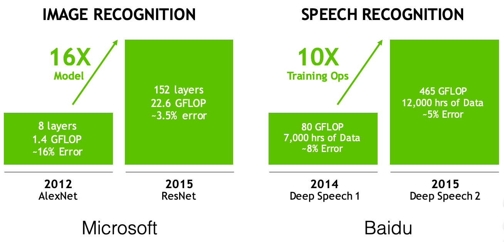
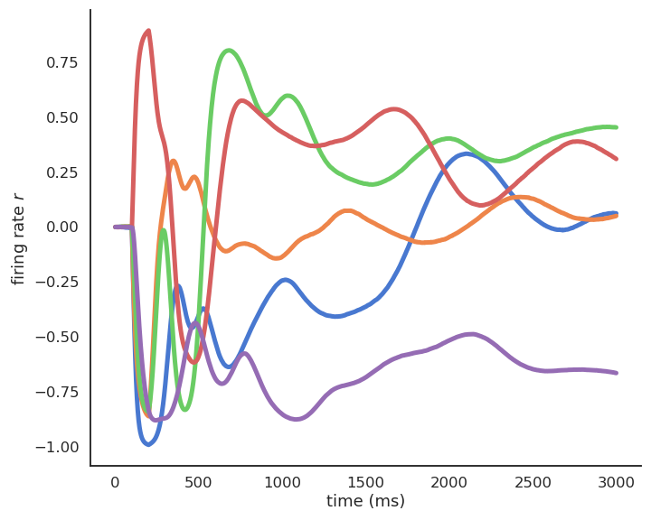

Neurocomputing
Limits of deep learning
Professur für Künstliche Intelligenz - Fakultät für Informatik
Moore’s law
The singularity hypothesis relies on an exponential increase of computational power.
Moore’s law (the number of transistors in a dense integrated circuit doubles about every two years) is the only known physical process following an exponential curve, and it is coming to an end.

Data is never infinite
Deep networks are very powerful and complex models, which tend to overfit (bad interpolation).
They learn their parameters from the training data only:

Data is never infinite
Deep networks are very powerful and complex models, which tend to overfit (bad interpolation).
They learn their parameters from the training data only:

Data is never infinite
Datasets for deep learning are typically huge:
ImageNet (14 million images)
OpenImages (9 million images)
Machine Translation of Various Languages (30 million sentences)
Librispeech (1000 hours of speech)
…
The deeper your network, the more powerful, but the more data it needs to be useful.
Solutions: data augmentation, transfer learning, unsupervised pre-training…

Data is never infinite
Deep Reinforcement Learning has the same sample complexity problem: it needs many trial-and-errors to find a correct behavior.
DQN and its variants need 200 million frames to learn to play Atari games: 38 days of uninterrupted human playing…


- On December 18th 2018, Google Deepmind defeated the human team “Mana” on Starcraft II, a much more complex game than Go for computers.
“The AlphaStar league was run for 14 days, using 16 TPUs for each agent. During training, each agent experienced up to 200 years of real-time StarCraft play.”
Computational power and energy

Computational power and energy
The computational power needed by deep networks increases exponentially: more layers, more parameters, more data, more everything.
Training modern deep networks is now out of reach of most universities / companies.
GPT-3 (OpenAI) was trained on 500B words (Wikipedia, Common Crawl) and has 175B parameters. Training it on a single V100 would take 355 years and cost 4.6 M$ in the cloud.


Inference times (making a prediction after training) become prohibitive: it is hard to use deep networks on low-budget hardware such as smartphones or embedded hardware (FPGA, DSP), computations must be deported to the cloud.
Can’t we make the networks smaller after training?
Quantization
NN require single or double-precision floating numbers (32 or 64 bits) to represent weights during learning, as small learning rates are used (e.g. \(10^{-5}\)) to add very small quantities to them.
After learning, do we need such a high precision? 2.378898437534897932 \(\approx\) 2.4

Quantization consists of transforming the weights into 8-bits integers or even 1 or 2 bits (binary networks) without losing (too much accuracy).
Frameworks such as Tensorflow Lite, TensorRT or PyTorch allow to automatically apply quantization on pretrained networks and embed, or even to use Quantization-aware training (QAT).
See https://arxiv.org/pdf/2004.09602.pdf for a review.
Pruning
- Another technique to reduce inference times by making the networks smaller is pruning: removing weights, filters, neurons or even layers that are not necessary after learning.

NN need a lot of weights/neurons to find the solution (training), but not obligatorily to implement it.
Several metrics or techniques can be used to decide whether or not to keep parameters:
- thresholds
- redundancy
- contribution to loss
Some methods iteratively re-train the network after pruning, leading to reductions up to 90%.
See https://link.springer.com/article/10.1007/s10462-020-09816-7 for a review.
Model distillation
The deep teacher learns to perform classification on the hard one-hot encoded labels.
Its knowledge can be transferred (distilled) to a shallower network.
The shallow student learns to perform regression on the logits \(\mathbf{z}\) of the softmax output of the teacher, which is easier and leads to the same accuracy!
\[ y_j = P(\text{class = j} | \mathbf{x}) = \mathcal{S}(z_j) = \frac{\exp(z_j)}{\sum_k \exp(z_k)} \]
- Logits carry information about the similarity between classes: cats are closer to dogs than to cars.

Adversarial attacks

One major problem of deep networks is that they are easy to fool.
Instead of searching for the weights which produce the right output for a given image (training), you search for the image that produces a different output for a given set of trained weights (adversarial training).
It turns out that a minimal change on the input image is enough to completely change the output of a trained network.
Using neural networks everywhere (self-driving cars, biometric recognition) poses serious security issues which are unsolved as of now.
Many different attacks and defenses are currently investigated https://arxiv.org/pdf/1712.07107.pdf.
Adversarial attacks

Let’s suppose we have a network trained to recognize cats from dogs using the loss function \(\mathcal{L}(\theta)\).
As an attacker, you want to find a cat-like image \(\mathbf{x}'\) that makes the network answer
dog.You define an adversarial loss making the network want to answer
dogfor a cat image:
\[ \mathcal{L}_\text{adversarial}(\mathbf{x}) = \mathbb{E}_{\mathbf{x} \in \text{cat}} ||\text{dog} - \mathbf{y}(\mathbf{x})||^2 \]
- Starting from a cat image \(\mathbf{x}\), you can apply gradient descent on the image space to minimize the adversarial loss:
\[ \Delta \mathbf{x} = - \eta \, \frac{\partial \mathcal{L}_\text{adversarial}(\mathbf{x})}{\partial \mathbf{x}} \]
One should add a constraint on \(\Delta \mathbf{x}\) to keep it small (Lagrange optimization).
You only need access to the output \(\mathbf{y}\) to attack the network, not its weights (blackbox attack)
Adversarial attacks
- Adversarial attacks work even when printed on paper.

- Object detection:

- They also work in real life: a couple of stickers are enough to have this stop sign recognized as a speed limit sign by an autonomous car…

- Face identification is a major issue:

Learning is mostly offline
- NN are prone to catastrophic forgetting: if you learn A then B, you forget A.

The only solution is to mix A and B during training (stochastic gradient descent).
Online learning or lifelong learning is very difficult: you can’t adapt a NN once it has learned.
Currently a hot topic of research, but not working yet.
One task at a time
The fact that computers can be better than humans on single tasks should not be worrying:
- The program written by Jim Slagle for his PhD thesis with Marvin Minsky was already better than MIT students at calculus in 1961.
Deep networks are still highly specialized, they do either:
Computer Vision
Speech processing
Natural Language Processing
Motor Control
but never two at the same time.

Some may be able to play different games at the same time (DQN, AlphaZero) but it stays in the same domain.
The ability to perform different tasks at the same time is a criteria for general intelligence.
Explainable / interpretable AI
Research on interpretability (XAI, explainable AI) may allow to better understand and trust how deep networks take decisions.
Neural networks are black box models: they are able to learn many things, but one does not know how.
- Can we really trust their decisions? Safety-critical applications.

Layer-wise relevance propagation allows to visualize which part of the input is most resposnible for the prediction.
It is a form of backpropagation, but from the prediction \(\mathbf{y}\) to the input \(\mathbf{x}\), instead of from the loss function \(\mathcal{L}(\theta)\) to the parameters \(\theta\).
See http://www.heatmapping.org/ for explanations and code.
Explainable / interpretable AI
The results are sometimes surprising.
Horse images in Pascal VOC all have a tag in the bottom left. The CNN has learned to detect that tag, not the horse…

No real generalization
Deep networks can be forced to interpolate with enough data (generalization), but cannot extrapolate.
For example, CNNs do not generalize to different viewpoints, unless you add them to the training data:


Lack of common sense
DL models do not have a model of physics: if the task (and the data) do not contain physics, it won’t learn it.
DL finds correlations between the inputs and the outputs, but not the causation.
Using gigantic datasets as in GPT-3 might give the illusion of reasoning, but it sometimes fails on surprisingly simple tasks.
DL has no theory of mind: when playing against humans (Go), it does not bother inferring the opponent’s mental state, it just plays his game.

No DL model to date has been able to show causal reasoning (or at least in a generic way).
Other AI approaches are better at causal reasoning (hierarchical Bayesian computing, probabilistic graphical models), but they do not mix well with deep learning yet.

Embodiment

Intelligence and cognition require a body to interact with the world.
The brain is not an isolated number cruncher.
The body valuates the world: it provides needs, goals, emotions.
It can even be a co-processor of the brain: gut feelings.
Emotions are totally absent from the current AI approach.
Goals are set externally: so-called AIs do not form their own goals (desirable?).
Deep Reinforcement Learning is a first small step in that direction.
The credit assignment problem

Backpropagation is not biologically plausible
- Backpropagation solves the credit assignment problem by transmitting the error gradient backwards through the weights (\(\sim\) synapses).
\[\Delta W_0 = \eta \, (\mathbf{t} - \mathbf{y}) \times W_1 \times \mathbf{x}^T\]

- But information only goes in one direction in the brain: from the presynaptic neuron to the postsynaptic one.
- A synapse does know not the weight of other synapses and cannot transmit anything backwards.

Feedback alignment


An alternative mechanism consists of backpropagating the error through another set of feedback weights.
Feedback connections are ubiquitous in the brain, especially in the neocortex.
The feedback weights do not need to learn: they can stay random.
The mechanism only works for small networks on MNIST.

Deep learning architectures are way too simple and unidirectional

Deep learning architectures are mostly unidirectional, from the input to the output, without feedback connections.
The brain is totally differently organized: a big “mess” of interconnected areas processing everything in parallel.
The figure on the left is only for vision, and only for the cerebral cortex: the thalamus, basal ganglia, hippocampus, cerebellum, etc, create additional shortcuts.
Is the complex structure of the brain just a side effect of evolution, or is it the only possible solution?
Inductive bias: the choice of the architecture constrains the functions it can perform / learn.
Biological neurons have dynamics
- The artificial neuron has no dynamics, it is a simple mathematical function:
\[ y = f( \sum_{i=1}^d w_i \, x_i + b) \]
If you do not change the inputs to an artificial neuron, its output won’t change.
Time does not exist, even in a LSTM: the only temporal variable is the frequency at which inputs are set.

Biological neurons have dynamics:
They adapt their firing rate to constant inputs.
they continue firing after an input disappears.
they fire even in the absence of inputs (tonic).
These dynamics are essential to information processing in the brain.
Recurrent dynamics and emergence of functions
Recurrent networks of dynamical neurons can exhibit very complex dynamics.
Biological neural networks evolve at the edge of chaos, i.e. in a highly non-linear regime while still being deterministic.
This allows the emergence of complex functions:
- the whole is more than the sum of its parts.


Self-organization

There are two complementary approaches to unsupervised learning:
the statistical approach, which tries to extract the most relevant information from the distribution of unlabeled data (autoencoders, etc).
self-organization, which tries to understand the principles of organization of natural systems and use them to create efficient algorithms.
Self-organization is a generic process relying on four basic principles: locality of computations, learning, competition and cooperation.
Self-organization
Self-organization is observed in a wide range of natural processes:
Physics: formation of crystals, star formation, chemical reactions…
Biology: folding of proteins, social insects, flocking behavior, brain functioning, Gaia hypothesis…
Social science: critical mass, group thinking, herd behavior…


Self-organization : locality of computations and learning
Not self-organized:

Self-organized:

A self-organizing system is composed of elementary units (particles, cells, neurons, organs, individuals…) which all perform similar deterministic functions (rule of behavior) on a small part of the available information.
There is no central supervisor or coordinator that knows everything and tells each unit what to do:
- they have their own rule of behavior and apply it to the information they receive.
The units are able to adapt their behavior to the available information: principle of localized learning.
There is no explicit loss function specifying what the system should do: emergence.
Example: Conway’s game of life.

The rules of Conway’s Game of Life (1970) are extremely simple:
A cell is either dead or alive.
A living cell with less than 1 neighbor dies.
A living cell with more than 4 neighbors dies.
A dead cell with 3 neighbors relives.
Despite this simplicity, GoL can exhibit very complex patterns (fractals, spaceships, pulsars).
The GoL is an example of self-organizing cellular automata.
Key differences between deep networks and the brain

No backpropagation in the brain, at least in its current form.
Information processing is local to each neuron and synapse.
Highly recurrent architecture (feedback connections).
Neurons have non-linear dynamics, especially as populations (edge of chaos).
Emergence of functions: the whole is more than the sum of its parts
Self-organization. There is no explicit loss function to minimize: the only task of the brain is to ensure survival of the organism (homeostasis).